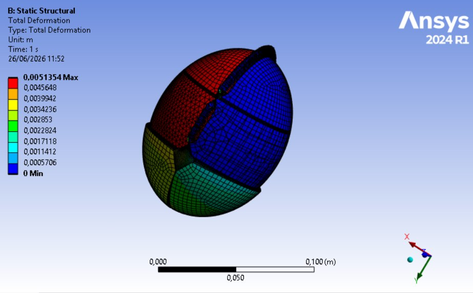
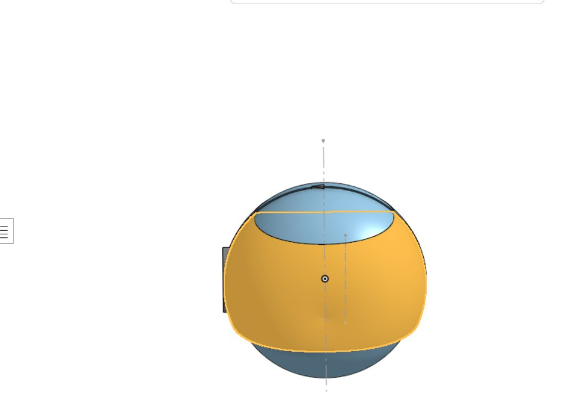
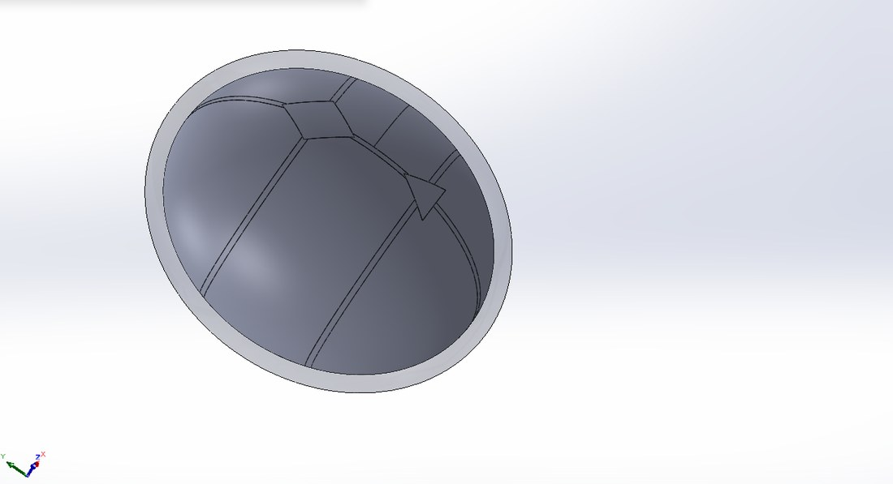
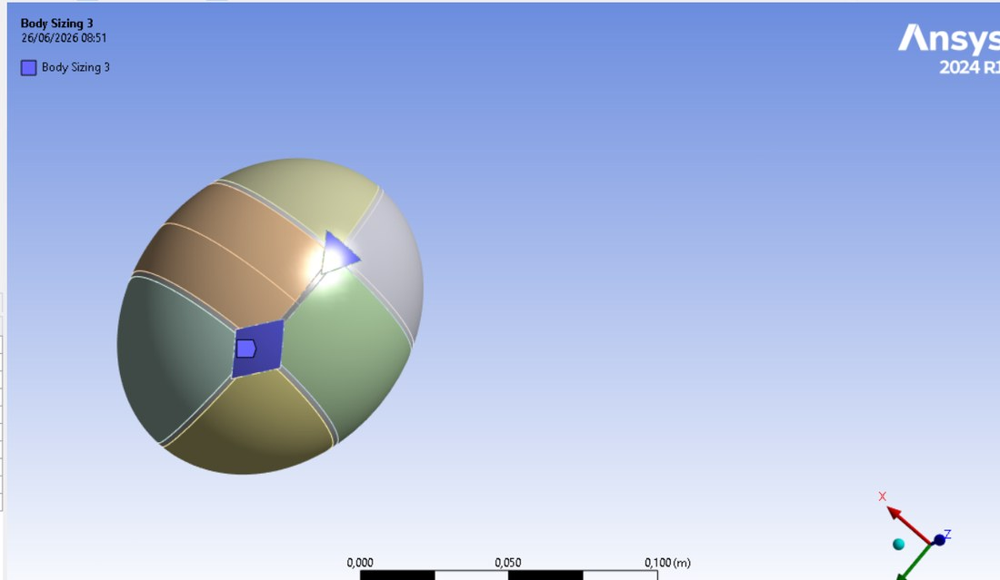
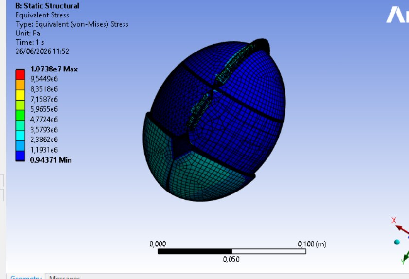

Multi-Body Biomechanics Model | SolidWorks Geometry Prep | ANSYS Static Structural

During birth, the bones of a baby's skull are not yet fused — they are joined by soft sutures and gaps called fontanelles that let the skull flex and change shape as it passes through the birth canal. This flexing, called cranial molding, is what a finite-element model of childbirth tries to capture. This project takes a segmented fetal-head model, prepares it for analysis, and runs a static structural simulation of the skull under the pressure of labor.
The base parametric geometry — the six cranial bone plates and the fontanelles — comes from the research project. My contribution was to turn it into something an FEA solver can actually use (a clean, watertight multi-body model in SolidWorks, with a suture network and a scalp layer added) and then to build and run the full ANSYS pipeline: materials, mesh, contacts, boundary conditions and results.
A biomechanics FEA case study. The anatomical model originates with the research project; the engineering shown here — FEA-ready geometry preparation, material and contact setup, meshing, boundary conditions and the molding simulation — is my contribution. The goal was a scientifically reasonable first model, not a validated clinical result.
The skull is represented as separate bodies rather than one solid, because that is what makes molding possible. The model contains six cranial bone plates — frontal, parietal and occipital, left and right — joined by a suture network, with an anterior and a posterior fontanelle, all wrapped in a soft-tissue scalp layer. Eleven bodies in total.

The research project's parametric model, with the cranial bones segmented into individual plates (one highlighted here). This was the anatomical starting point handed to me for the analysis work.
As received, the geometry was built for modelling, not for meshing. I rebuilt it in SolidWorks into a clean, watertight multi-body solid — repairing the geometry, defining the suture bands between the plates, and adding a 6 mm scalp shell over the skull — then exported it as a single multi-body STEP file ready for ANSYS.

The rebuilt model in SolidWorks: cranial plates, suture bands between them, fontanelles and a 6 mm scalp shell, all as clean separate bodies — the form the FEA solver needs for contact and meshing.
Each tissue was given its own neonatal material — stiff cranial bone, much more compliant sutures and fontanelles, and a soft scalp — so the model can deform the way a real skull does, flexing at the soft joints while the plates stay comparatively rigid. Published neonatal tissue properties scatter widely, so these are best read as a first, literature-informed estimate rather than validated values.
The bodies were connected with contacts, then meshed with several body-sizing controls — refined down to 0.5 mm on the smaller, more critical bodies and coarser (1–3 mm) elsewhere — to resolve the thin sutures and fontanelles without an unnecessarily heavy mesh everywhere.

The assembly in ANSYS, coloured by body — each cranial plate and suture meshed separately with its own sizing control so the thin, compliant regions are captured.
For loading, the skull was fixed and constrained with a displacement boundary condition, and a uniform 16 kPa pressure — representing the peak pressure on the fetal head during labor — was applied to the skull. An early run gave unphysical displacements; tracing that to a units error in the displacement boundary condition and correcting it brought the peak deformation down to a physically reasonable ~5 mm.
Under the labor pressure the skull deforms in the characteristic molding pattern — the head elongates as the plates rotate and shift at the compliant sutures, exactly the behaviour the model is meant to reproduce (see the deformation field at the top of the page). Peak total deformation is about 5.1 mm.

Von Mises stress is low over most of the skull and concentrates along the sutures and plate edges, where the geometry changes sharply — the regions that carry the molding.
A first model — read the trends, not the local peaks
The solver also reports a peak equivalent elastic strain of about 6.5 (≈ 650 %), which is not physically meaningful — cranial bone and sutures cannot strain that far. A value like that is the signature of a local numerical singularity, almost certainly at a sharp suture or fontanelle edge or a contact corner, where the mesh cannot resolve a geometric stress riser. The global deformation and the overall stress distribution are the meaningful outputs; isolated peak values at those singular points should be disregarded until the edges are filleted and the mesh is converged there.
More broadly this is an early-stage model: the material properties are first estimates, the geometry is idealised, and labor is approximated as a single static pressure rather than a dynamic process. Natural next steps are literature-calibrated tissue properties, a mesh-convergence study at the suture and fontanelle junctions, validated contact definitions, and a move toward a time-dependent molding simulation.
✓ Project Outcomes